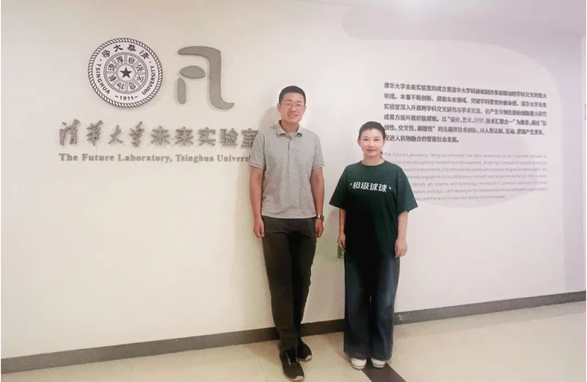

8月12日，超级有爱智能科技有限公司创始人元晓帅博士拜访清华大学未来实验室。
拜访期间，元晓帅博士与触摸传感技术方向研究员焦阳博士就“在具身智能结合心理健康领域，触摸传感对压力的精准评测”进行了深入探讨。并就人机物交互与融合、老龄陪伴与社交、未来材料等多个板块的深化合作进行了讨论。
自2021年开始，超级有爱团队骨干成员就与清华大学未来实验室在技术落地转化、课题研究上有持续交流。
围绕 AI、心理健康与儿童成长陪伴，超级有爱与前沿研究机构展开交流。

8月12日，超级有爱智能科技有限公司创始人元晓帅博士拜访清华大学未来实验室。
拜访期间，元晓帅博士与触摸传感技术方向研究员焦阳博士就“在具身智能结合心理健康领域，触摸传感对压力的精准评测”进行了深入探讨。并就人机物交互与融合、老龄陪伴与社交、未来材料等多个板块的深化合作进行了讨论。
自2021年开始，超级有爱团队骨干成员就与清华大学未来实验室在技术落地转化、课题研究上有持续交流。